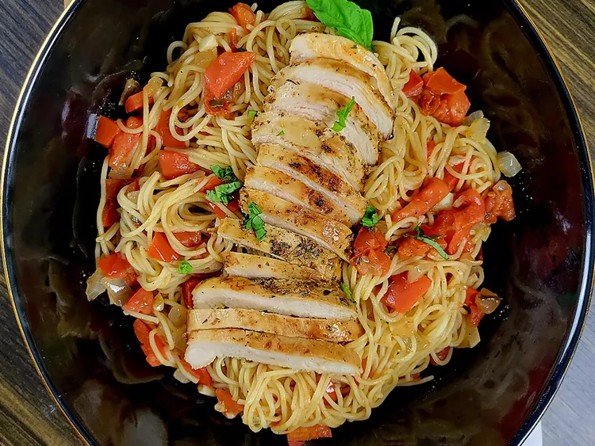

Home

Description
If you like a good, rustic bruschetta...you're gonna love this pasta dish with pan-seared chicken. The freshness of the tomatoes, basil, and garlic will leave your family wanting more!
Chicken
- 3 boneless skinless chicken breasts, sliced in half horizontally
- 1 cup Italian salad dressing
- 1 teaspoon garlic powder
- 1 teaspoon salt
- 1 teaspoon freshly ground black pepper
Bruschetta
- 8 Roma tomatoes, seeded and chopped
- 6 basil leaves, chopped, or more to taste
- 1 head garlic - cloves separated, peeled, and chopped
- 1/3 cup olive oil
- 1/3 cup balsamic vinegar
- Salt and freshly ground black pepper to taste
Pasta
- 1 pound angel hair pasta
- 1/3 cup vegetable oil
- 1 yellow onion, chopped
- 2 tablespoons olive oil
Steps
- Place chicken, Italian dressing, garlic powder, 1 teaspoon salt, and 1 teaspoon black pepper in a resealable plastic bag; seal the bag and squeeze gently to coat chicken. Place chicken in the refrigerator to marinate for 15 minutes or up to 4 hours.
- Add Roma tomatoes, basil, garlic, olive oil, and balsamic vinegar to a large bowl and mix well. Season to taste with salt and black pepper.
- Heat vegetable oil in a cast iron skillet over medium-high heat. Remove chicken from marinade and add to the skillet. Cook until chicken is golden brown and juices run clear, 5 to 7 minutes per side. An instant-read thermometer, inserted near the center, should read at least 165 degrees F (74 degrees C). Discard marinade.
- Remove chicken from the skillet. Set aside to cool slightly, then slice into bite-sized pieces.
- Meanwhile, bring a large pot of lightly salted water to a boil. Cook angel hair pasta in the boiling water, stirring occasionally, until tender yet firm to the bite, 4 to 5 minutes.
- Remove excess oil from the skillet; add the 2 tablespoons olive oil to the skillet, and cook and stir yellow onion until translucent, 3 to 4 minutes. Stir in bruschetta mixture; cook for 3 to 4 minutes. Remove from heat.
- Drain pasta. Toss pasta with bruschetta, top with cooked chicken, and serve.